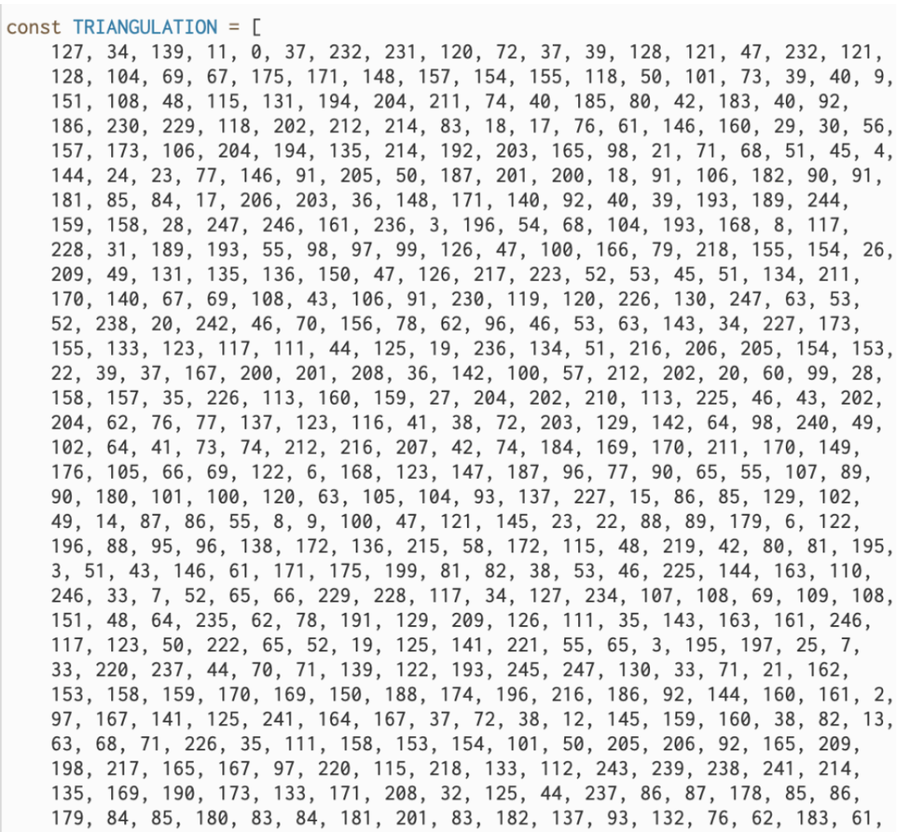

Documentation
Intention
This project intends to recreate my first creative project in p5.js(Self Portrait) using the faceMesh model.
Process
I started by thinking of ways to triangulate the face using key points outputted by the faceMesh model. I figured that it's really hard to draw each triangle one-by-one unless you hardcode which key points to connect. I used a source on the class github:link which records the path of all the triangles in an array.
Next, I stored each triangle as Tri objects in an array. A function(Tri.update()) will loop through the array to determine the new position, size, and color of each Tri object based on the video input. Then, I programmed a function checkTriHover() to make a triangle disappear when the mouse hovers above it. Triangle collision is calculated the same way as in Self Portrait. As more triangles disappear, the flashing effect will grow more intense, until the program resets when most of the triangles have disappeared. These effects are all based on the original visual style of Self Portrait.